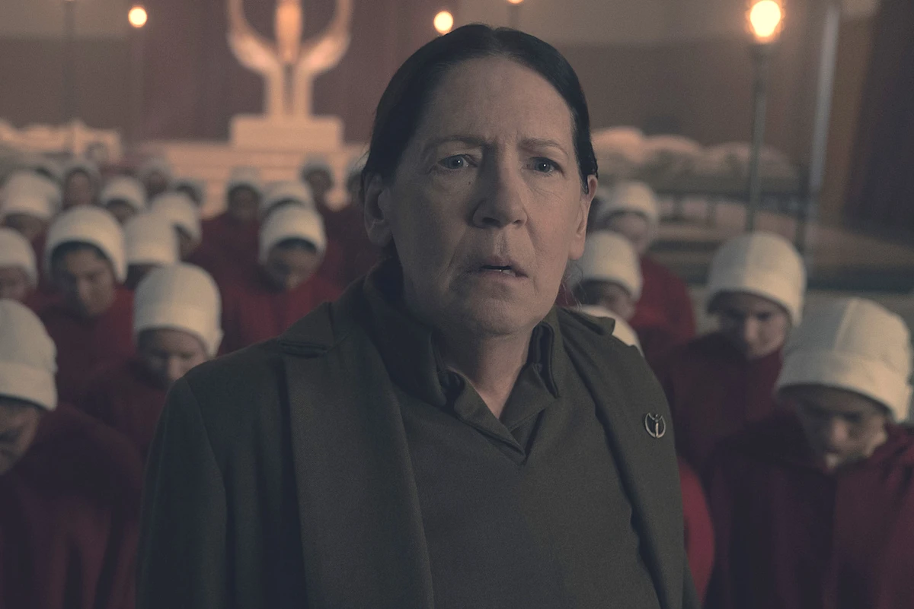
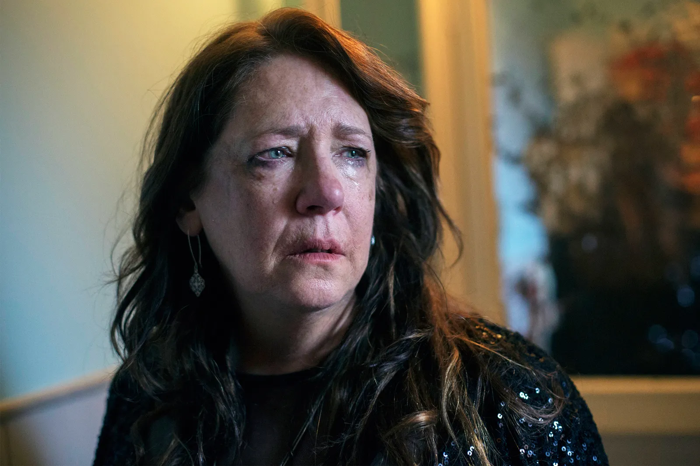
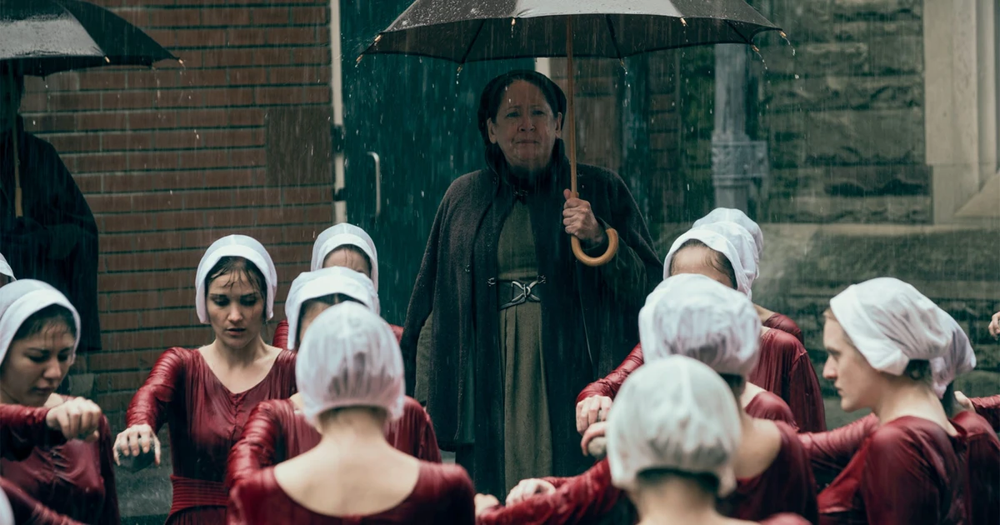
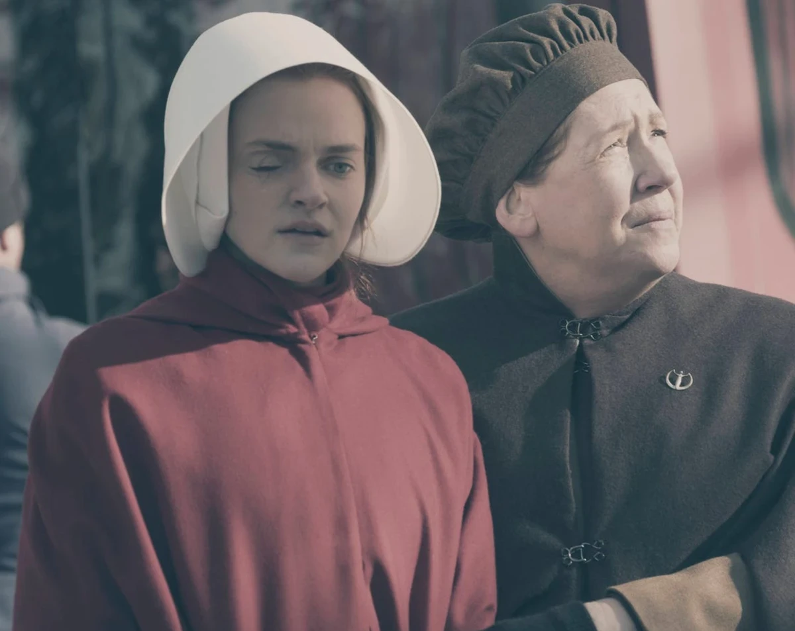

El Régimen De Gilead
Tía Lydia Clements

Tía Lydia Clements
La cara femenina de la opresión de Gilead
La Tía Lydia es uno de los personajes principales de la historia. Es interpretada por Ann Dowd.
Su devoción religiosa y su aplicación rigurosa de la doctrina combinan una brutalidad despiadada con un sentido distorsionado de afecto maternal hacia las criadas.
Antecedentes antes de Gilead
Antes de la revolución fundamentalista, Lydia Clements trabajó como jueza de un tribunal de familia.
Posteriormente se desempeñó como maestra de cuarto grado en una escuela primaria.
Su experiencia juzgando dinámicas familiares y disciplinando a niños pequeños sentó las bases del rol de control, corrección y obediencia que ejercería dentro del nuevo régimen.

Adoctrinamiento, castigo y afecto

El Centro Rojo
Como líder de las Tías, dirige la reeducación sexual, el adoctrinamiento psicológico y el entrenamiento de las criadas antes de sus asignaciones.
Pertenece a la única casta femenina a la que Gilead permite leer y escribir.

Brutalidad y protección
Lydia aplica castigos físicos y torturas convencida de que el sufrimiento puede redimir a las criadas. Entre sus órdenes se encuentra la extracción del ojo de Janine.
A la vez, desarrolla hacia Janine un afecto conflictivo y protector, hasta llamarla por su nombre en momentos de vulnerabilidad.